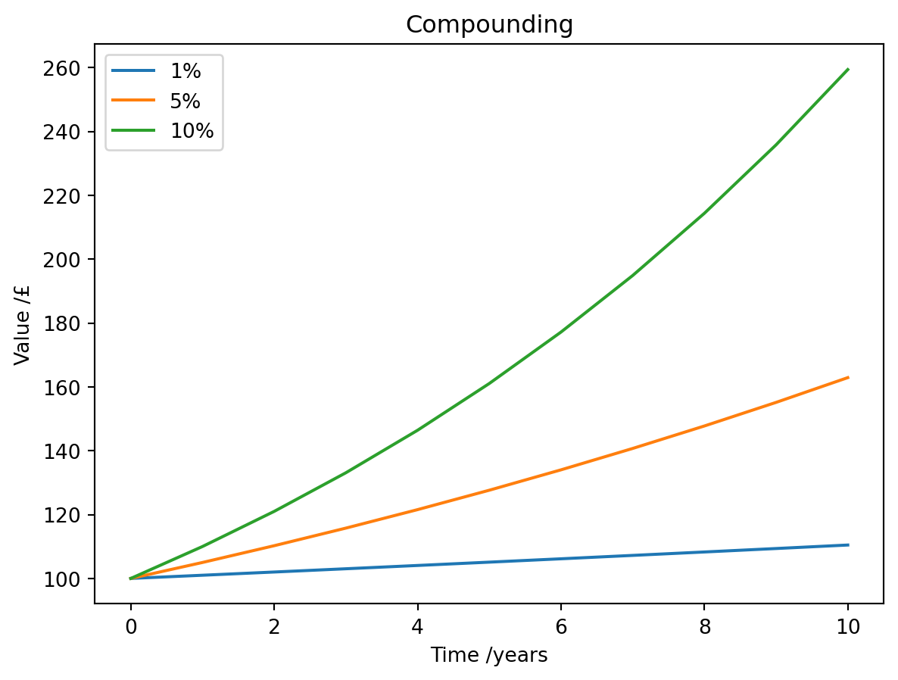

I’ve never been someone who was very interested in finance. I guess that came from growing-up in a lower middle class, christian household. Money was always an issue and those who had it, were a bit evil. What is more, money was something real - it paid for food, rent, books - the idea of making money by investing money seemed absurd.
I recently took a very introductory course on finance on edX.org called Finance for Everyone. Although the course was a bit slow-paced it still showed me, that I was missing the basics - or at least - was not aware of the implications. This course (Introduction to Corporate Finance) was an excellent follow-up.
Let’s go over the basics.
Time Value of Money (TVM)
Let’s just assume that money does have some value. The time-value-of-money is a tool to compare different ways to deal with your money by bringing things you will spend/gain now and things you spend/gain in the future on an equal footing.
For this article well assume a constant, positive rate of return\(r\) and no inflation.
Future Value and Compounding
The future value is a pretty simple concept everyone’s familiar with. If you have money in the bank the bank pays you a (nowadays very small) rate of return per period (e.g. a year) expressed in precentage. So £100 today will be \(£100 \cdot (1 + r)\) one time period from now.
When left for multiple periods \(n\) the interest will compound: \(£100 \cdot (1 + r)^n\). Expressed generally, the future value (FV) of an amount today (present value, PV) will be:
\[
FV = PV \cdot (1 + r)^n.
\]
import matplotlib.pyplot as pltPV =100years =range(0, 11)rates = (0.01, 0.05, 0.10)FV = [[PV * (1+ r) ** y for y in years] for r in rates]for trace in FV: plt.plot(trace)plt.title("Compounding")plt.xlabel("Time /years")plt.ylabel("Value /£")plt.legend(["1%", "5%", "10%"])plt.show()

So far so good.
Present Value and Discounting
We can also turn the reasoning around and calculate the present value of something we will get in the future.
\[
PV = \frac{FV}{(1 + r)^n}
\]
The important thing to realize is, that it allows us to compare a future gain to a gain in the present. E.g. if someone told me they’d give me £102 in one year. What would that be worth to me now? It depends on the rate of interest. If I could have £100 now and deposit it in a bank at 2% interest, I’d have £102 in a year. Therefore, the gain of £102 in a year is equivalent to receiving £100 now.
We obtained the present value by discounting the future value with an interest rate we could obtain (somewhere) for the investment now.
Cashflows
This situation can be generalized to multiple cashflows \(C_i\) (payments), to obtain the present value we simply need to discount each cashflow by the appropriate amount \(\frac{C_i}{(1+r)^i}\).
Note that by convention the first cashflow occurs one time period from now. We need to keep this in mind when applying the formula to real world problems.
Based on this general formula we can derive some special cases:
Perpetuity
Growth Perpetuity
Annuity
Perpetuity
Assume the cashflows will occur indefinitely and be constant \(C\), the formula will simplify to:
What’s the (present) value of a bond that will pay £50 each year for 10 years when the ‘market’ interest rate is 2%?
r =0.02C =50# using the general formulaPV =sum([C*(1+ r)**(-i) for i inrange(1, 11)])print("£", round(PV))
£ 449
What value would the bond have, if the interest rate was higher?
r =0.05C =50# using the general formulaPV =sum([C*(1+ r)**(-i) for i inrange(1, 11)])print("£", round(PV))
£ 386
As we can see, the (present) value given a higher interest rate would be lower.
Value of a Loan
Alice takes out a loan of £100’000 from a bank. The interest rate on the loan is 5% and Alice will pay back the money in 10 equal, yearly installments. What would she pay?
r =0.05n =10PV =100_000C = PV * r / (1- (1+ r)**(-n))print("Payments:", round(C))# let's double check that this would work out to# a PV 100'000 for the bank using the general formulaPV_B =sum([C*(1+ r)**(-i) for i inrange(1, 11)])print("PV:", round(PV_B))
Payments: 12950
PV: 100000
So why would a bank do this? Well apart from not actually having to have the money they lend you, they will lend you the money for a higher interest rate than they could get investing it elsewhere.
r_A =0.05r_B =0.02n =10PV_A =100_000C = PV_A * r_A / (1- (1+ r_A)**(-n))# let's see what that looks like for the bankPV_B =sum([C*(1+ r_B)**(-i) for i inrange(1, 11)])print("Value for the bank:", round(PV_B))print("Gain:", round(PV_B - PV_A))
Value for the bank: 116329
Gain: 16329
By lending £100’000 to Alice the bank effectively gained £16’329 in present value.
Summary
The TVM gives us a tool to reason about financial investments by taking time and interest into account. Payments in the future decrease in (present) value the higher the interest rate is because of discounting.
There is so much more to discuss in this space, especially risk will be an interesting thing to talk about, but more on that later.